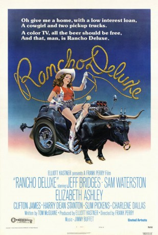

#10170 Rancho Deluxe
 
 IMDB-Wertung: 6.4 / 10
IMDB-Wertung: 6.4 / 10  Tomatometer: 69
Tomatometer: 69  Metascore: 0
Metascore: 0 
Die jungen Männer Jack (Jeff Bridges) und Cecil (Sam Waterston) schlagen sich als Viehdiebe in Montana durch. Um ein paar Mädchen zu imponieren, entführen die beiden einen preisgekrönten Bullen, der dem reichen Rancher Brown (Clifton James) gehört.Sie wollen damit ein Lösegeld erpressen. - Ironischer Spätwestern voller geschliffener Dialoge. Klasse Soundtrack von Jimmy Buffett.
Jahr: 1975
Dauer: 89 Minuten
FSK: 12
Land: USA Studio: United ArtistsTonspuren: DD2.0 - ,
Untertitel:
Auflösung: 1080p (1920x1040) Größe: 11980 MB
Genre: Komödie, Western, Liebe
Regisseur: Frank Perry
Drehbuch: Thomas McGuane
Soundtrack: Jimmy Buffett
Darsteller:
 Jeff Bridges als Jack McKee
Jeff Bridges als Jack McKee Sam Waterston als Cecil Colson
Sam Waterston als Cecil Colson Elizabeth Ashley als Cora Brown
Elizabeth Ashley als Cora Brown Clifton James als John Brown
Clifton James als John Brown Slim Pickens als Henry Beige
Slim Pickens als Henry Beige- Charlene Dallas als Laura Beige
 Harry Dean Stanton als Curt
Harry Dean Stanton als Curt Richard Bright als Burt
Richard Bright als Burt Patti D'Arbanville als Betty Fargo
Patti D'Arbanville als Betty Fargo- Maggie Wellman als Mary Fargo
 Joe Spinell als Mr. Colson
Joe Spinell als Mr. Colson Jimmy Buffett als Jimmy Buffett
Jimmy Buffett als Jimmy Buffett- Sandy Kenyon als Skinny Face (uncredited)
 John Quade als Circular Face (uncredited)
John Quade als Circular Face (uncredited)- Bert Conway als Wilbur Fargo
- Anthony Palmer als Karl
- Richard McMurray als Mr. McKee
- Danna Hansen als Mrs. McKee
- Doria Cook-Nelson als Anna
- Helen Craig als Mrs. Castle
- Richard Cavanaugh als Livestock Judge
- Patti Jerome als The Madam
- Arnold Huppert als Policeman
- Esther Black als Grandma Hooper
- Ronda Copland als Dee
- Dwight Riley als The Orchestra
- Jim Melin als The Orchestra
- Tim Schaeffer als The Orchestra
- Oneida Broderick als Another Lady (uncredited)
- Paula Jermunson als Lady Foreman (uncredited)
- Kostas als Jimmy Buffett Band Member (uncredited)
- Angela Kramer als Ranch Lady (uncredited)
- Ben Mar Jr. als Cook (uncredited)
- Thomas McGuane als Mandolin Player (uncredited)
- Pat Noteboom als Prostitute (uncredited)
- Wilma Riley als Mrs. Colson (uncredited)
- John Rodgers als Clerk (uncredited)
- Joseph Sullivan als Dizzy (uncredited)
- Greg Taylor als Harmonica Player in Bar (uncredited)
- Bob Wetzel als Truck Driver (uncredited)
Datei: X:\HD-Western-1960-1979\Rancho Deluxe (1975, FSK12, 1920x1040).mkv seit 13.12.2018
Festplatte: HD Eastern+Western
 Es gibt insgesamt 110 Filme in der Gruppe 'HD-Western-1960-1979'
Es gibt insgesamt 110 Filme in der Gruppe 'HD-Western-1960-1979'